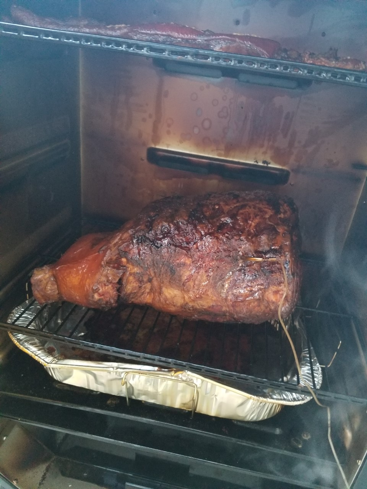

Smoked Pork Leg

Description
This beautiful piece of meat was on sale at our local grocery store for 0.99 a pound!
I obviously needed to grab one and invite 15 friends over for an weekday dinner
party, who doesn't love an impromptu party on a Wednsday night?
This massive leg was 24 lbs and bone in. I started by removing most of the skin
and a good amount of the fat cap. Then I popped it into a brine for 24 hours.
After we sealed in all those juices and flavour we fired up our smoker and let it
sit in it for 24 hours, smoking low and slow. Then let it rest in a cooler for an
hour before shredding and serving.
Ingredients
- Pork leg
- Mustard
- Salt
- Pepper
- Garlic powder
- Onion powder
- Paprika
Steps
- Start by removing most of the skin and fat (you can leave some fat to
keep the leg moist but you don't want so much that you will be chewing on it later)
- Next you can brine it for 24 hours in your favorite brine solution but this step is optional
You can find my favorite one here
Brine
Once you have brined it, remove from the liquid and rinse off any spices stuck to the meat
- You will now need to bring the pork leg to room temperature,
this will ensure even cooking and not cool down your smoker temperature.
You should also start your smoker and set the temperature to 250F we used apple
wood chips but you can use any kind you like
- Now slather the pork with mustard
- Next sprinkle all of your spices over the entire pork leg, make sure not to miss any spots!
You can add as much or as little of each spice as you desire (go easy on the salt as
pork is pretty salty to begin with)
- Once your smoker is up to temperature place your leg inside and insert your temperature gauge
into the thickest posrtion of meat ensuring you don't hit the bone to get a false reading
- Cook your leg for 1 hour per pound of meat, ours took 24 hours to get up to 200 degrees (cooking
times will vary depending on the outside temperature/wind/ how many times you open your
smoker to check on it, etc.
- Once your temperature reads 200 - 205 degrees lightly wrap in aluminum foil and place in
a cooler to rest for one hour
- That's it! Shred and sauce as desired. Enjoy!